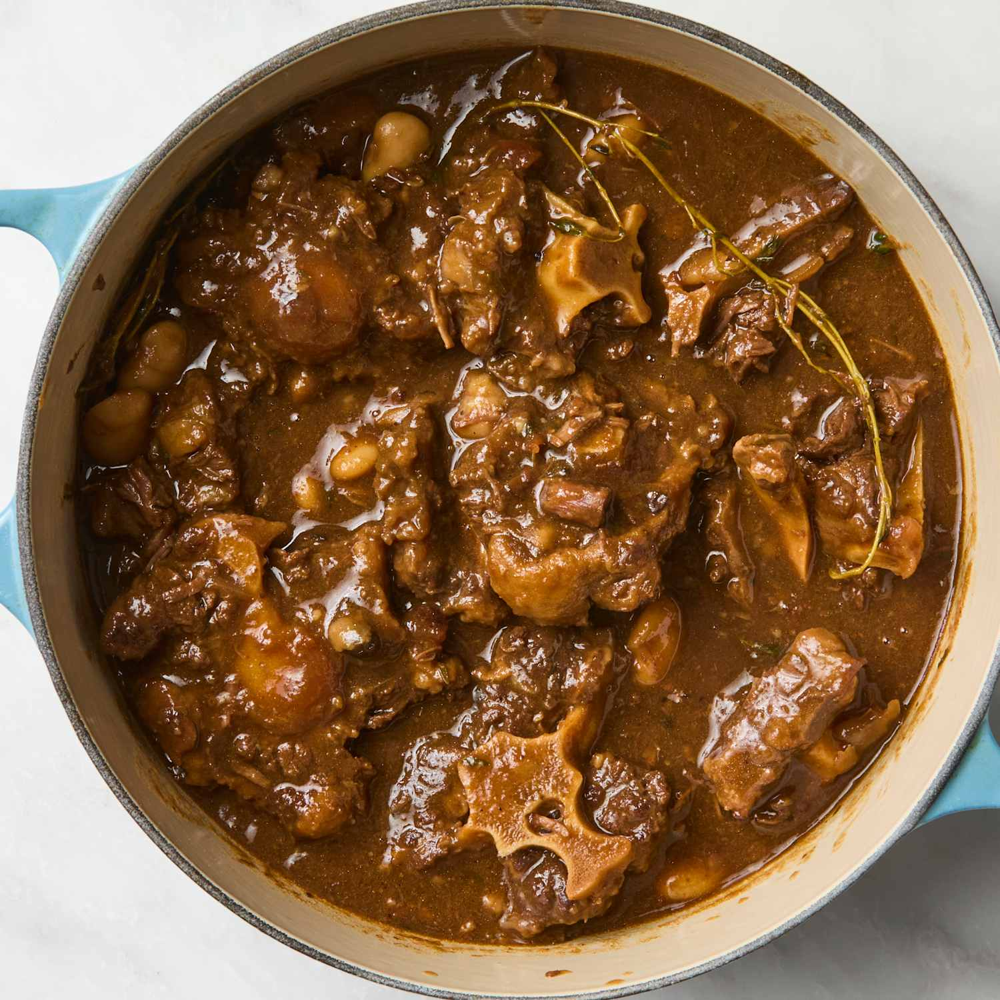

Jamaican Oxtail
Home

A traditional Jamaican dish made with tender oxtail, slow-cooked to perfection.
This Jamaican oxtail recipe is a hearty and flavorful dish that combines tender oxtail with a rich blend of
spices and vegetables. It's perfect for a comforting meal and can be served with rice and peas or steamed
vegetables.
Ingredients:
- 2 ½ pounds oxtail
- 1 tablespoon soy sauce
- 1 tablespoon Worcestershire sauce
- 1 teaspoon salt
- 1 tablespoon white sugar
- 1 tablespoon garlic and herb seasoning
- 1 teaspoon browning sauce
- ¼ teaspoon ground paprika
- ¼ teaspoon ground cayenne pepper
- ¼ teaspoon ground black pepper
- 2 tablespoons vegetable oil
- 2 carrots, thinly sliced
- 2 stalks celery, thinly sliced
- 1 onion, chopped
- 4 garlic cloves, minced
- 3 cups low-sodium beef broth
- 1 bunch fresh thyme
- 1 sprig fresh rosemary
- 1 bay leaf
- 2 tablespoons unsalted butter
Steps:
- Place oxtail in a shallow dish. Combine soy sauce, Worcestershire sauce, salt, sugar, garlic and herb
seasoning, browning sauce, paprika, cayenne pepper, and black pepper together in a small bowl. Rub both
sides of oxtail with soy sauce mixture; discard any excess.
- Heat vegetable oil in a large pot over medium-high heat. Sear oxtail in hot oil until golden brown, about 3
minutes per side; transfer to a plate and set aside.
- Sauté carrots, celery, onion, and garlic in the same pot until softened, about 5 minutes. Add beef broth,
thyme, rosemary, and bay leaf; bring to a boil. Add oxtail, with its juices, and butter. Reduce heat to low,
cover, and simmer until oxtail is fork tender, about 3 hours.
- Uncover and increase heat to high. Cook, stirring occasionally, until sauce reduces and thickens, about 5
minutes.